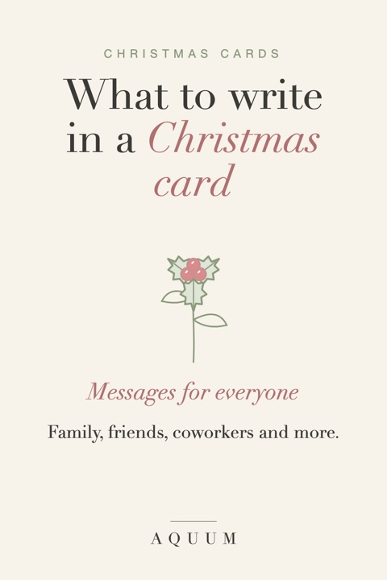

What to Write in a Christmas Card: Messages for Everyone on Your List
2026-10-03
Written by the team behind Aquum, a small birth flower gift shop. How we make money.

The hardest part of a Christmas card is the blank space under "Merry Christmas". A pre-printed greeting and a signature can feel like a form letter, and a long letter is hard to write thirty times. The answer is usually in between: one or two warm, specific lines.
Here are messages you can use as they are or adapt, sorted by who you're writing to, plus a set built on each person's birth flower, so every card says something about the person who opens it.
A simple formula
- The wish: "Merry Christmas" or "Happy holidays".
- One specific thing: a moment from this year, something they did for you, something you're looking forward to together.
- A wish for next year: short and real.
"Merry Christmas! Thank you for every Sunday call this year. Here's to more of them in the next."
For family
- "Merry Christmas to the people who make every year feel like home."
- "Wishing you a Christmas as full and loud as our kitchen on the 25th."
- "Thank you for every tradition, even the ones we pretend to complain about."
- For parents: "Thank you for every Christmas morning you made magic. This year, we hope it's your turn to rest."
- For grandparents: "Our favorite part of Christmas is still you. Love from all of us." See our gifts for grandma for something to go with the card.
For friends
- "Merry Christmas to the friend who feels like family."
- "Another year, another hundred voice notes. Thank you for every one."
- "Wishing you a Christmas with good food, good people and no emails."
- For a friend far away: "Miles apart, but you're at our table in spirit. Merry Christmas."
For your partner
- "My favorite Christmas present is the life we're building."
- "Merry Christmas to the person I'd choose again every year."
- "Thank you for this year: the hard parts and the good ones."
For coworkers and your boss
Keep it warm and light:
- "Wishing you a restful holiday and a great start to the new year."
- "Thank you for all your help this year. Merry Christmas!"
- "Happy holidays! It's been a pleasure working with you."
For teachers, nurses and caregivers
- "Thank you for the patience and kindness you showed [name] this year. Merry Christmas."
- "You made a hard year easier. We're so grateful."
More ideas in our teacher gift guide and gifts for nurses.
For neighbors and people you don't know well
- "Merry Christmas from your neighbors at [number]! Wishing you a peaceful new year."
- "Season's greetings and warm wishes for the year ahead."
For someone who's having a hard year
Christmas can be difficult after a loss or a hard year. Skip "merry" if it feels wrong:
- "Thinking of you this Christmas and sending all our love."
- "No need to reply. Just wanted you to know we're here."
- "Wishing you gentle days and people close by this season."
The Christmas rose stands for hope in hard times; our guide to Christmas flowers and their meanings has the story.
Messages built on their birth flower
A line about their birth flower turns a generic card into a personal one. Use it with our free birth flower Christmas cards, which already have each month's flower on the front.
| Born in | Flower and meaning | Christmas message |
|---|---|---|
| January | Carnation: love that doesn't give up | "Your flower stands for steady love. Thank you for a whole year of it." |
| February | Violet: quiet loyalty | "Loyal, kind and never showy: the violet, and you. Merry Christmas." |
| March | Daffodil: new beginnings | "Here's to the new beginnings next year will bring you." |
| April | Daisy: uncomplicated joy | "Wishing you a Christmas as cheerful as your birth flower." |
| May | Lily of the valley: happiness returns | "May happiness come back to you again and again this season." |
| June | Rose: love in all its forms | "Of course your flower is the rose. Merry Christmas to someone easy to love." |
| July | Larkspur: an open heart | "Thank you for your open heart this year. Merry Christmas." |
| August | Gladiolus: strength of character | "You showed so much strength this year. Rest well this Christmas." |
| September | Aster: wisdom and patience | "Thank you for your patience and good advice all year long." |
| October | Marigold: warmth that stays | "Your flower means warmth that stays, and so does your friendship." |
| November | Chrysanthemum: honest friendship | "Grateful for your honest, steady friendship. Merry Christmas." |
| December | Paperwhite: good wishes ahead | "A Christmas wish and a birthday wish: may next year be your best yet." |
Not sure of someone's flower? The birth flower finder tells you from a birthday.
Finishing touches
- Sign it by hand, even if the message is printed. A first name in ink matters.
- Add one line for the kids in a family card: "Hope Santa finds you, Ava and Leo!"
- Mail by mid-December for US addresses, earlier for international ones.
- A matching tag: our free Christmas gift tags use the same flowers.
Writing a birthday card instead? Here's what to write in a birthday card, month by month.